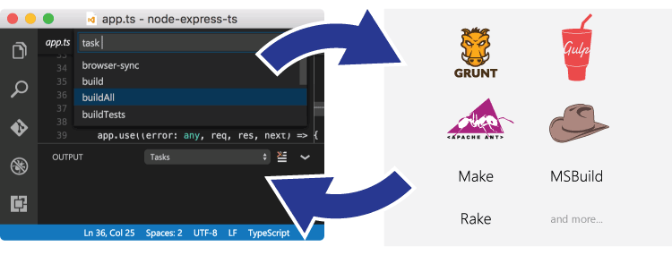
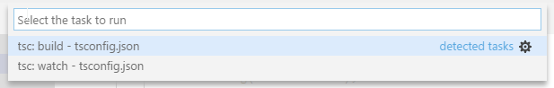
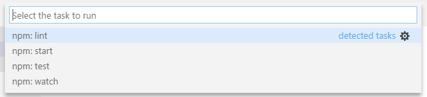
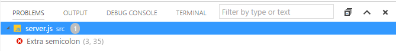
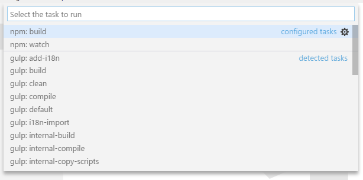
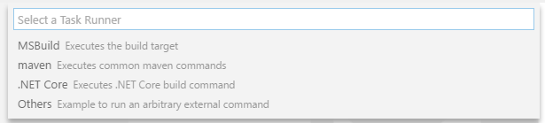
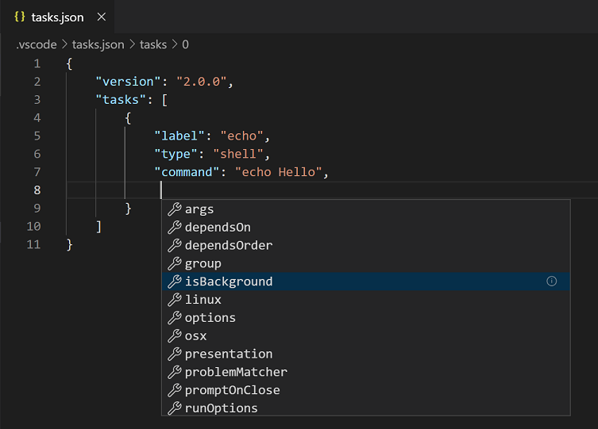
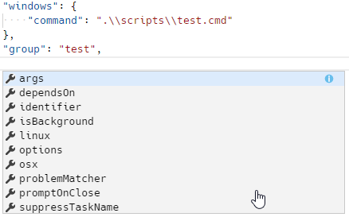
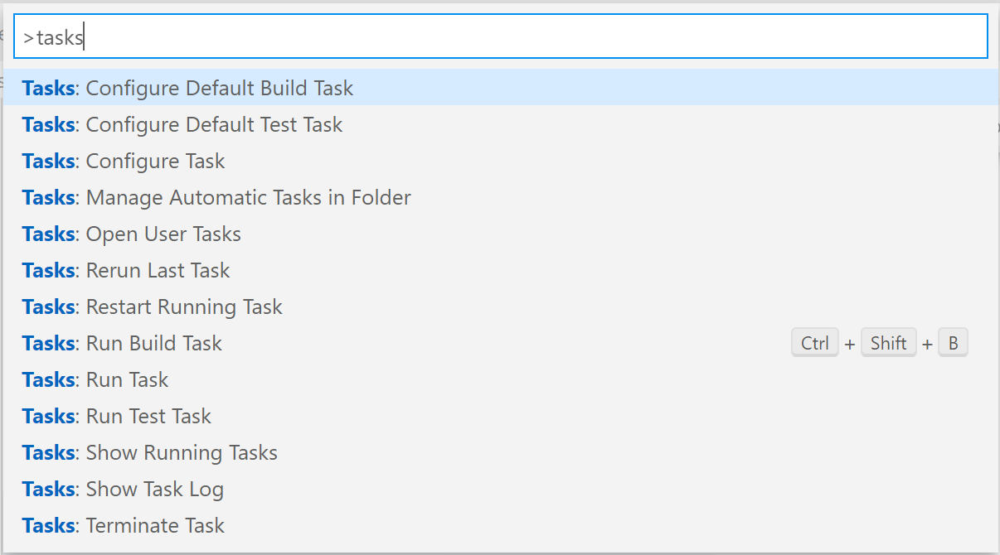
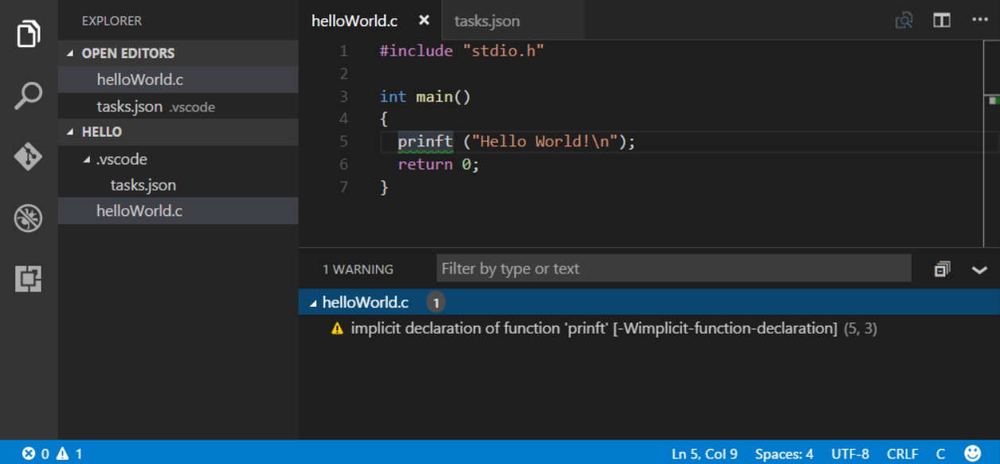

Integrate with External Tools via Tasks
If you are using Visual Studio Code version 1.13 or earlier, refer to the previous version of the Tasks documentation.
Lots of tools exist to automate tasks like linting, building, packaging, testing, or deploying software systems. Examples include the TypeScript Compiler, linters like ESLint and TSLint as well as build systems like Make, Ant, Gulp, Jake, Rake, and MSBuild.

These tools are mostly run from the command line and automate jobs inside and outside the inner software development loop (edit, compile, test, and debug). Given their importance in the development life cycle, it is helpful to be able to run tools and analyze their results from within VS Code. Tasks in VS Code can be configured to run scripts and start processes so that many of these existing tools can be used from within VS Code without having to enter a command line or write new code. Workspace or folder specific tasks are configured from the tasks.json file in the .vscode folder for a workspace.
Extensions can also contribute tasks using a Task Provider, and these contributed tasks can add workspace-specific configurations defined in the tasks.json file.
Note: Task support is only available when working on a workspace folder. It is not available when editing single files.
TypeScript Hello World
Let's start with a simple "Hello World" TypeScript program that we want to compile to JavaScript.
Create an empty folder "mytask", generate a tsconfig.json file and start VS Code from that folder.
mkdir mytask
cd mytask
tsc --init
code .
Now create a HelloWorld.ts file with the following content
function sayHello(name: string): void {
console.log(`Hello ${name}!`);
}
sayHello('Dave');
Pressing kb(workbench.action.tasks.build) or running Run Build Task from the global Terminal menu show the following picker:

The first entry executes the TypeScript compiler and translates the TypeScript file to a JavaScript file. When the compiler has finished, there should be a HelloWorld.js file. The second entry starts the TypeScript compiler in watch mode. Every save to the HelloWorld.ts file will regenerate the HelloWorld.js file.
You can also define the TypeScript build or watch task as the default build task so that it is executed directly when triggering Run Build Task (kb(workbench.action.tasks.build)). To do so, select Configure Default Build Task from the global Terminal menu. This shows you a picker with the available build tasks. Select tsc: build or tsc: watch and VS Code will generate a tasks.json file. The one shown below makes the tsc: build task the default build task:
{
// See https://go.microsoft.com/fwlink/?LinkId=733558
// for the documentation about the tasks.json format
"version": "2.0.0",
"tasks": [
{
"type": "typescript",
"tsconfig": "tsconfig.json",
"problemMatcher": [
"$tsc"
],
"group": {
"kind": "build",
"isDefault": true
}
}
]
}
Unlike the previous 0.1.0 version of the tasks.json file, this does not define a new task. It annotates the tsc: build tasks contributed by VS Code's TypeScript extension to be the default build task. You can now execute the TypeScript compiler by pressing kb(workbench.action.tasks.build).
Task auto-detection
VS Code currently auto-detects tasks for the following systems: Gulp, Grunt, Jake, and npm. We are working with the corresponding extension authors to add support for Maven and the C# dotnet command as well. If you develop a JavaScript application using Node.js as the runtime, you usually have a package.json file describing your dependencies and the scripts to run. If you have cloned the eslint-starter example, then executing Run Tasks from the global menu shows the following list:

If you have not already done so, install the necessary npm modules by running npm install. Now open the server.js file and add a semicolon to the end of a statement (note the ESLint starter assumes statements without a semicolon) and execute the Run Tasks again. This time select the npm: lint task. When prompted for the problem matcher to use, select ESLint stylish

Executing the task produces one error, shown in the Problems view:

In addition, VS Code created a tasks.json file with the following content:
{
// See https://go.microsoft.com/fwlink/?LinkId=733558
// for the documentation about the tasks.json format
"version": "2.0.0",
"tasks": [
{
"type": "npm",
"script": "lint",
"problemMatcher": [
"$eslint-stylish"
]
}
]
}
This instructs VS Code to scan the output of the npm lint script for problems using the ESLint stylish format.
For Gulp, Grunt, and Jake, the task auto-detection works the same. Below is an example of the tasks detected for the vscode-node-debug extension.

Tip: You can run your task through Quick Open (
kb(workbench.action.quickOpen)) by typing 'task',kbstyle(Space)and the command name. In this case, 'task lint'.
Task auto detection can be disabled using the following settings:
{
"typescript.tsc.autoDetect": "off",
"grunt.autoDetect": "off",
"jake.autoDetect": "off",
"gulp.autoDetect": "off",
"npm.autoDetect": "off"
}
Custom tasks
Not all tasks or scripts can be auto-detected in your workspace. Sometimes it is necessary to define your own custom tasks. Assume you have a script to run your tests in order to set up some environment correctly. The script is stored in a script folder inside your workspace and named test.sh for Linux and macOS and test.cmd for Windows. Run Configure Tasks from the global Terminal menu and select the Create tasks.json file from template entry. This opens the following picker:

Note: If you don't see the list of task runner templates, you may already have a
tasks.jsonfile in your folder and its contents will be open in the editor. Close the file and either delete or rename it for this example.
We are working on more auto-detection support, so this list will get smaller and smaller in the future. Since we want to write our own custom task, select Others from the list. This opens the tasks.json file with a task skeleton. Replace the contents with the following:
{
// See https://go.microsoft.com/fwlink/?LinkId=733558
// for the documentation about the tasks.json format
"version": "2.0.0",
"tasks": [
{
"label": "Run tests",
"type": "shell",
"command": "./scripts/test.sh",
"windows": {
"command": ".\\scripts\\test.cmd"
},
"group": "test",
"presentation": {
"reveal": "always",
"panel": "new"
}
}
]
}
The task's properties have the following semantic:
- label: The task's label used in the user interface.
- type: The task's type. For a custom task, this can either be
shellorprocess. Ifshellis specified, the command is interpreted as a shell command (for example: bash, cmd, or PowerShell). Ifprocessis specified, the command is interpreted as a process to execute. - command: The actual command to execute.
- windows: Any Windows specific properties. Will be used instead of the default properties when the command is executed on the Windows operating system.
- group: Defines to which group the task belongs. In the example, it belongs to the
testgroup. Tasks that belong to the test group can be executed by running Run Test Task from the Command Palette. - presentation: Defines how the task output is handled in the user interface. In this example, the Integrated Terminal showing the output is
alwaysrevealed and anewterminal is created on every task run. - options: Override the defaults for
cwd(current working directory),env(environment variables), orshell(default shell). Options can be set per task but also globally or per platform. Environment variables configured here can only be referenced from within your task script or process and will not be resolved if they are part of your args, command, or other task attributes. - runOptions: Defines when and how a task is run.
You can see the full set of task properties and values with IntelliSense in your tasks.json file. Bring up suggestions with Trigger Suggest (kb(editor.action.triggerSuggest)) and read the descriptions on hover or with the Read More... ('i') flyout.

You can also review the tasks.json schema.
Shell commands need special treatment when it comes to commands and arguments that contain spaces or other special characters like $. By default, the task system supports the following behavior:
- If a single command is provided, the task system passes the command as is to the underlying shell. If the command needs quoting or escaping to function properly, the command needs to contain the proper quotes or escape characters. For example, to list the directory of a folder containing spaces in its name, the command executed in bash should look like this:
ls 'folder with spaces'.
{
"label": "dir",
"type": "shell",
"command": "dir 'folder with spaces'"
}
- If a command and arguments are provided, the task system will use single quotes if the command or arguments contain spaces. For
cmd.exe, double quotes are used. A shell command like below will be executed in PowerShell asdir 'folder with spaces'.
{
"label": "dir",
"type": "shell",
"command": "dir",
"args": [
"folder with spaces"
]
}
- If you want to control how the argument is quoted, the argument can be a literal specifying the value and a quoting style. The example below uses escaping instead of quoting for an argument with spaces.
{
"label": "dir",
"type": "shell",
"command": "dir",
"args": [
{
"value": "folder with spaces",
"quoting": "escape"
}
]
}
Besides escaping, the following values are supported:
- strong: Uses the shell's strong quoting mechanism, which suppresses all evaluations inside the string. Under PowerShell and for shells under Linux and macOS, single quotes are used (
'). For cmd.exe,"is used. - weak: Uses the shell's weak quoting mechanism, which still evaluates expression inside the string (for example, environment variables). Under PowerShell and for shells under Linux and macOS, double quotes are used (
"). cmd.exe doesn't support weak quoting so VS Code uses"as well.
If the command itself contains spaces, VS Code will by default strong quote the command as well. As with arguments, the user can control the quoting of the command using the same literal style.
There are more task properties to configure your workflow. You can use IntelliSense with kb(editor.action.triggerSuggest) to get an overview of the valid properties.

In addition to the global menu bar, task commands can be accessed using the Command Palette (kb(workbench.action.showCommands)). You can filter on 'task' and can see the various task related commands.

Compound tasks
You can also compose tasks out of simpler tasks with the dependsOn property. For example, if you have a workspace with a client and server folder and both contain a build script, you can create a task that starts both build scripts in separate terminals. If you list more than one task in the dependsOn property, they are executed in parallel by default.
The tasks.json file looks like this:
{
"version": "2.0.0",
"tasks": [
{
"label": "Client Build",
"command": "gulp",
"args": ["build"],
"options": {
"cwd": "${workspaceFolder}/client"
}
},
{
"label": "Server Build",
"command": "gulp",
"args": ["build"],
"options": {
"cwd": "${workspaceFolder}/server"
}
},
{
"label": "Build",
"dependsOn": ["Client Build", "Server Build"]
}
]
}
If you specify "dependsOrder": "sequence" then your task dependencies are executed in the order they are listed in dependsOn. Any background/watch tasks used in dependsOn with "dependsOrder": "sequence" must have a problem matcher that tracks when they are "done". The following task runs task Two, task Three, and then task One.
{
"label": "One",
"type": "shell",
"command": "echo Hello ",
"dependsOrder": "sequence",
"dependsOn":[
"Two",
"Three"
]
}
User level tasks
You can create user level tasks that are not tied to a specific workspace or folder using the Tasks: Open User Tasks command. Only shell and process tasks can be used here since other task types require workspace information.
Output behavior
Sometimes you want to control how the Integrated Terminal panel behaves when running tasks. For instance, you may want to maximize editor space and only look at task output if you think there is a problem. The behavior of the terminal can be controlled using the presentation property of a task. It offers the following properties:
- reveal: Controls whether the Integrated Terminal panel is brought to front. Valid values are:
- always - The panel is always brought to front. This is the default.
- never - The user must explicitly bring the terminal panel to the front using the View > Terminal command (
kb(workbench.action.terminal.toggleTerminal)). - silent - The terminal panel is brought to front only if the output is not scanned for errors and warnings.
- focus: Controls whether the terminal is taking input focus or not. Default is
false. - echo: Controls whether the executed command is echoed in the terminal. Default is
true. - showReuseMessage: Controls whether to show the "Terminal will be reused by tasks, press any key to close it" message.
- panel: Controls whether the terminal instance is shared between task runs. Possible values are:
- shared: The terminal is shared and the output of other task runs are added to the same terminal.
- dedicated: The terminal is dedicated to a specific task. If that task is executed again, the terminal is reused. However, the output of a different task is presented in a different terminal.
- new: Every execution of that task is using a new clean terminal.
- clear: Controls whether the terminal is cleared before this task is run. Default is
false. - group: Controls whether the task is executed in a specific terminal group using split panes. Tasks in the same group (specified by a string value) will use split terminals to present instead of a new terminal panel.
You can modify the terminal panel behavior for auto-detected tasks as well. For example, if you want to change the output behavior for the npm: run lint from the ESLint example from above, add the presentation property to it:
{
// See https://go.microsoft.com/fwlink/?LinkId=733558
// for the documentation about the tasks.json format
"version": "2.0.0",
"tasks": [
{
"type": "npm",
"script": "lint",
"problemMatcher": [
"$eslint-stylish"
],
"presentation": {
"reveal": "never"
}
}
]
}
You can also mix custom tasks with configurations for detected tasks. A tasks.json that configures the npm: run lint task and adds a custom Run Test tasks looks like this:
{
// See https://go.microsoft.com/fwlink/?LinkId=733558
// for the documentation about the tasks.json format
"version": "2.0.0",
"tasks": [
{
"type": "npm",
"script": "lint",
"problemMatcher": [
"$eslint-stylish"
],
"presentation": {
"reveal": "never"
}
},
{
"label": "Run tests",
"type": "shell",
"command": "./scripts/test.sh",
"windows": {
"command": ".\\scripts\\test.cmd"
},
"group": "test",
"presentation": {
"reveal": "always",
"panel": "new"
}
}
]
}
Run behavior
You can specify a task's run behaviors using the runOptions property:
- reevaluateOnRerun: Controls how variables are evaluated when a task is executed through the Rerun Last Task command. The default is
true, meaning that variables will be reevaluated when a task is rerun. When set tofalsethe resolved variable values from the previous run of the task will be used. - runOn: Specifies when a task is run.
default: The task will only be run when executed through the Run Task command.folderOpen: The task will be run when the containing folder is opened. The first time you open a folder that contains a task withfolderOpen, you will be asked if you want to allow tasks to run automatically in that folder. You can change your decision later using the Allow Automatic Tasks in Folder and Disallow Automatic Tasks in Folder commands.
Customizing auto-detected tasks
As mentioned above, you can customize auto-detected tasks in the tasks.json file. You usually do so to modify presentation properties or to attach a problem matcher to scan the task's output for errors and warnings. You can customize a task directly from the Run Task list by pressing the gear icon to the right to insert the corresponding task reference into the tasks.json file. Assume you have the following Gulp file to lint JavaScript files using ESLint (the file is taken from https://github.com/adametry/gulp-eslint):
const gulp = require('gulp');
const eslint = require('gulp-eslint');
gulp.task('lint', () => {
// ESLint ignores files with "node_modules" paths.
// So, it's best to have gulp ignore the directory as well.
// Also, Be sure to return the stream from the task;
// Otherwise, the task may end before the stream has finished.
return gulp.src(['**/*.js','!node_modules/**'])
// eslint() attaches the lint output to the "eslint" property
// of the file object so it can be used by other modules.
.pipe(eslint())
// eslint.format() outputs the lint results to the console.
// Alternatively use eslint.formatEach() (see Docs).
.pipe(eslint.format())
// To have the process exit with an error code (1) on
// lint error, return the stream and pipe to failAfterError last.
.pipe(eslint.failAfterError());
});
gulp.task('default', ['lint'], function () {
// This will only run if the lint task is successful...
});
Executing Run Task from the global Terminal menu will show the following picker:

Press the gear icon. This will create the following tasks.json file:
{
// See https://go.microsoft.com/fwlink/?LinkId=733558
// for the documentation about the tasks.json format
"version": "2.0.0",
"tasks": [
{
"type": "gulp",
"task": "default",
"problemMatcher": []
}
]
}
Usually you would now add a problem matcher (in this case $eslint-stylish) or modify the presentation settings.
Processing task output with problem matchers
VS Code can process the output from a task with a problem matcher. Problem matchers scan the task output text for known warning or error strings, and report these inline in the editor and in the Problems panel. VS Code ships with several problem matchers 'in-the-box':
- TypeScript:
$tscassumes that file names in the output are relative to the opened folder. - TypeScript Watch:
$tsc-watchmatches problems reported from thetsccompiler when executed in watch mode. - JSHint:
$jshintassumes that file names are reported as an absolute path. - JSHint Stylish:
$jshint-stylishassumes that file names are reported as an absolute path. - ESLint Compact:
$eslint-compactassumes that file names in the output are relative to the opened folder. - ESLint Stylish:
$eslint-stylishassumes that file names in the output are relative to the opened folder. - Go:
$gomatches problems reported from thegocompiler. Assumes that file names are relative to the opened folder. - CSharp and VB Compiler:
$mscompileassumes that file names are reported as an absolute path. - Lessc compiler:
$lesscassumes that file names are reported as absolute path. - Node Sass compiler:
$node-sassassumes that file names are reported as an absolute path.
You can also create your own problem matcher, which we'll discuss in a later section.
Binding keyboard shortcuts to tasks
If you need to run a task frequently, you can define a keyboard shortcut for the task.
For example, to bind Ctrl+H to the Run tests task from above, add the following to your keybindings.json file:
{
"key": "ctrl+h",
"command": "workbench.action.tasks.runTask",
"args": "Run tests"
}
Variable substitution
When authoring tasks configurations, it is useful to have a set of predefined common variables such as the active file (${file}) or workspace root folder (${workspaceFolder}). VS Code supports variable substitution inside strings in the tasks.json file and you can see a full list of predefined variables in the Variables Reference.
Note: Not all properties will accept variable substitution. Specifically, only
command,args, andoptionssupport variable substitution.
Below is an example of a custom task configuration that passes the current opened file to the TypeScript compiler.
{
"label": "TypeScript compile",
"type": "shell",
"command": "tsc ${file}",
"problemMatcher": [
"$tsc"
]
}
Similarly, you can reference your project's configuration settings by prefixing the name with ${config:. For example, ${config:python.formatting.autopep8Path} returns the Python extension setting formatting.autopep8Path.
Below is an example of a custom task configuration, which executes autopep8 on the current file using the autopep8 executable defined by the python.formatting.autopep8Path setting:
{
"label": "autopep8 current file",
"type": "process",
"command": "${config:python.formatting.autopep8Path}",
"args": [
"--in-place",
"${file}"
]
}
If you want to specify the selected Python interpreter used by the Python extension for tasks.json or launch.json, you can use the ${command:python.interpreterPath} command.
If simple variable substitution isn't enough, you can also get input from the user of your task by adding an inputs section to your tasks.json file.

For more information about inputs, see the Variables Reference.
Operating system specific properties
The task system supports defining values (for example, the command to be executed) specific to an operating system. To do so, put an operating system specific literal into the tasks.json file and specify the corresponding properties inside that literal.
Below is an example that uses the Node.js executable as a command and is treated differently on Windows and Linux:
{
"label": "Run Node",
"type": "process",
"windows": {
"command": "C:\\Program Files\\nodejs\\node.exe"
},
"linux": {
"command": "/usr/bin/node"
}
}
Valid operating properties are windows for Windows, linux for Linux, and osx for macOS. Properties defined in an operating system specific scope override properties defined in the task or global scope.
Task properties can also be defined in the global scope. If present, they will be used for specific tasks unless they define the same property with a different value. In the example below, there is a global presentation property, which defines that all tasks should be executed in a new panel:
{
// See https://go.microsoft.com/fwlink/?LinkId=733558
// for the documentation about the tasks.json format
"version": "2.0.0",
"presentation": {
"panel": "new"
},
"tasks": [
{
"label": "TS - Compile current file",
"type": "shell",
"command": "tsc ${file}",
"problemMatcher": [
"$tsc"
]
}
]
}
Character escaping in PowerShell
When the default shell is PowerShell, or when a task is configured to use PowerShell, you might see unexpected space and quote escaping. The unexpected escaping only occurs with cmdlets because VS Code doesn't know if your command contains cmdlets. Example 1 below shows a case where you'll get escaping that doesn't work with PowerShell. Example 2 shows the best, cross-platform, way to get good escaping. In some cases, you might not be able to follow example 2 and you'll need to do the manual escaping shown in example 3.
"tasks": [
{
"label": "PowerShell example 1 (unexpected escaping)",
"type": "shell",
"command": "Get-ChildItem \"Folder With Spaces\""
},
{
"label": "PowerShell example 2 (expected escaping)",
"type": "shell",
"command": "Get-ChildItem",
"args": ["Folder With Spaces"]
},
{
"label": "PowerShell example 3 (manual escaping)",
"type": "shell",
"command": "& Get-ChildItem \\\"Folder With Spaces\\\""
}
]
Changing the encoding for a task output
Tasks frequently act with files on disk. If these files are stored on disk with an encoding different than the system encoding, you need to let the command executed as a task know which encoding to use. Since this depends on the operating system and the shell used, there is no general solution to control this. Below are advice and examples on how to make it work.
If you need to tweak the encoding, you should check whether it makes sense to change the default encoding used by your operating system or at least change it for the shell you use by tweaking the shell's profile file.
If you only need to tweak it for a specific task, then add the OS-specific command necessary to change the encoding to the tasks command line. The following example is for Windows using code page of 437 as its default. The task shows the output of a file containing Cyrillic characters and therefore needs code page 866. The task to list the file looks like this assuming that the default shell is set to cmd.exe:
{
// See https://go.microsoft.com/fwlink/?LinkId=733558
// for the documentation about the tasks.json format
"version": "2.0.0",
"tasks": [
{
"label": "more",
"type": "shell",
"command": "chcp 866 && more russian.txt",
"problemMatcher": []
}
]
}
If the task is executed in PowerShell, the command needs to read like this chcp 866; more russian.txt. On Linux and macOS, the locale command can be used to inspect the locale and tweak the necessary environment variables.
Examples of tasks in action
To highlight the power of tasks, here are a few examples of how VS Code can use tasks to integrate external tools like linters and compilers.
Transpiling TypeScript to JavaScript
The TypeScript topic includes an example that creates a task to transpile TypeScript to JavaScript and observe any related errors from within VS Code.
Compiling Markdown to HTML
The Markdown topic provides two examples for compiling Markdown to HTML:
Transpiling Less and SCSS into CSS
The CSS topic provides examples of how to use Tasks to generate CSS files.
Defining a problem matcher
VS Code ships some of the most common problem matchers 'in-the-box'. However, there are lots of compilers and linting tools out there, all of which produce their own style of errors and warnings so you may want to create your own problem matcher.
We have a helloWorld.c program in which the developer mistyped printf as prinft. Compiling it with gcc will produce the following warning:
helloWorld.c:5:3: warning: implicit declaration of function 'prinft'
We want to produce a problem matcher that can capture the message in the output and show a corresponding problem in VS Code. Problem matchers heavily rely on regular expressions. The section below assumes you are familiar with regular expressions.
Tip: We have found the RegEx101 playground, which has an ECMAScript (JavaScript) flavor, to be a great way to develop and test regular expressions.
A matcher that captures the above warning (and errors) looks like this:
{
// The problem is owned by the cpp language service.
"owner": "cpp",
// The file name for reported problems is relative to the opened folder.
"fileLocation": ["relative", "${workspaceFolder}"],
// The actual pattern to match problems in the output.
"pattern": {
// The regular expression. Example to match: helloWorld.c:5:3: warning: implicit declaration of function 'printf' [-Wimplicit-function-declaration]
"regexp": "^(.*):(\\d+):(\\d+):\\s+(warning|error):\\s+(.*)$",
// The first match group matches the file name which is relative.
"file": 1,
// The second match group matches the line on which the problem occurred.
"line": 2,
// The third match group matches the column at which the problem occurred.
"column": 3,
// The fourth match group matches the problem's severity. Can be ignored. Then all problems are captured as errors.
"severity": 4,
// The fifth match group matches the message.
"message": 5
}
}
Note that the file, line, and message properties are mandatory. The fileLocation specifies whether the file paths that are produced by the task output and matched in the problem are absolute or relative. If the task produces both absolute and relative paths, you can use the autoDetect file location. With autoDetect, paths are first tested as absolute paths, and if the file doesn't exist then the path is assumed to be relative.
Here is a finished tasks.json file with the code above (comments removed) wrapped with the actual task details:
{
"version": "2.0.0",
"tasks": [
{
"label": "build",
"command": "gcc",
"args": ["-Wall", "helloWorld.c", "-o", "helloWorld"],
"problemMatcher": {
"owner": "cpp",
"fileLocation": ["relative", "${workspaceFolder}"],
"pattern": {
"regexp": "^(.*):(\\d+):(\\d+):\\s+(warning|error):\\s+(.*)$",
"file": 1,
"line": 2,
"column": 3,
"severity": 4,
"message": 5
}
}
}
]
}
Running it inside VS Code and pressing kb(workbench.actions.view.problems) to get the list of problems gives you the following output:

Note: The C/C++ extension includes problem matchers for GCC so there is no need to define our own.
There are a couple more properties that can be used inside a pattern. These are:
- location - If the problem location is line or line,column or startLine,startColumn,endLine,endColumn, then our generic location match group can be used.
- endLine - The match group index for the problem's end line. Can be omitted if no end line value is provided by the compiler.
- endColumn - The match group index for the problem's end column. Can be omitted if no end column value is provided by the compiler.
- code - The match group index for the problem's code. Can be omitted if no code value is provided by the compiler.
You can also define a problem matcher that captures only a file. To do so, define a pattern with the optional kind attribute set to file. In this case, there is no need to provide a line or location property.
Note: A functional pattern must at least provide a match group for
fileandmessageif thekindproperty is set tofile. If nokindproperty is provided or thekindproperty is set tolocation, a function pattern must provide alineorlocationproperty as well.
Note: The problem matcher only parses output from the given command. If you want to parse output written to separate file (e.g. a log file), make the command that you run print out lines from the separate file before it finishes executing.
Defining a multiline problem matcher
Some tools spread problems found in a source file over several lines, especially if stylish reporters are used. An example is ESLint; in stylish mode it produces output like this:
test.js
1:0 error Missing "use strict" statement strict
✖ 1 problems (1 errors, 0 warnings)
Our problem matcher is line-based so we need to capture the file name (test.js) with a different regular expression than the actual problem location and message (1:0 error Missing "use strict" statement).
To do this, use an array of problem patterns for the pattern property. This way you define a pattern per each line you want to match.
The following problem pattern matches the output from ESLint in stylish mode - but still has one small issue that we need to resolve next. The code below has a first regular expression to capture the file name and the second to capture the line, column, severity, message, and error code:
{
"owner": "javascript",
"fileLocation": ["relative", "${workspaceFolder}"],
"pattern": [
{
"regexp": "^([^\\s].*)$",
"file": 1
},
{
"regexp": "^\\s+(\\d+):(\\d+)\\s+(error|warning|info)\\s+(.*)\\s\\s+(.*)$",
"line": 1,
"column": 2,
"severity": 3,
"message": 4,
"code": 5
}
]
}
However, this pattern will not work if there is more than one problem on a resource. For instance, imagine the following output from ESLint:
test.js
1:0 error Missing "use strict" statement strict
1:9 error foo is defined but never used no-unused-vars
2:5 error x is defined but never used no-unused-vars
2:11 error Missing semicolon semi
3:1 error "bar" is not defined no-undef
4:1 error Newline required at end of file but not found eol-last
✖ 6 problems (6 errors, 0 warnings)
The pattern's first regular expression will match "test.js", the second "1:0 error ...". The next line "1:9 error ..." is processed but not matched by the first regular expression and so no problem is captured.
To make this work, the last regular expression of a multiline pattern can specify the loop property. If set to true, it instructs the task system to apply the last pattern of a multiline matcher to the lines in the output as long as the regular expression matches.
The information captured by the first pattern, which in this case matches test.js, will be combined with each of the subsequent lines that match the loop pattern to create multiple problems. In this example, six problems would be created.
Here is a problem matcher to fully capture ESLint stylish problems:
{
"owner": "javascript",
"fileLocation": ["relative", "${workspaceFolder}"],
"pattern": [
{
"regexp": "^([^\\s].*)$",
"file": 1
},
{
"regexp": "^\\s+(\\d+):(\\d+)\\s+(error|warning|info)\\s+(.*)\\s\\s+(.*)$",
"line": 1,
"column": 2,
"severity": 3,
"message": 4,
"code": 5,
"loop": true
}
]
}
Note: If you have multiple problems that occur on the same resource with the exact same line and column, then only one problem will be shown. This applies to all problem matchers, not just multiline problem matchers.
Modifying an existing problem matcher
If an existing problem matcher is close to what you need, you can modify it in your tasks.json task. For example, the $tsc-watch problem matcher only applies to closed documents. If you want to have it apply to all documents you can modify it:
{
"type": "npm",
"script": "watch",
"problemMatcher": {
"base": "$tsc-watch",
"applyTo": "allDocuments"
},
"isBackground": true,
}
Other modifiable problem matcher properties include background, fileLocation, owner, pattern, severity, and source.
Background / watching tasks
Some tools support running in the background while watching the file system for changes and then triggering an action when a file changes on disk. With Gulp such functionality is provided through the npm module gulp-watch. The TypeScript compiler tsc has built in support for this via the --watch command line option.
To provide feedback that a background task is active in VS Code and producing problem results, a problem matcher has to use additional information to detect these state changes in the output. Let's take the tsc compiler as an example. When the compiler is started in watch mode, it prints the following additional information to the console:
> tsc --watch
12:30:36 PM - Compilation complete. Watching for file changes.
When a file changes on disk that contains a problem, the following output appears:
12:32:35 PM - File change detected. Starting incremental compilation...
src/messages.ts(276,9): error TS2304: Cannot find name 'candidate'.
12:32:35 PM - Compilation complete. Watching for file changes.
Looking at the output shows the following pattern:
- The compiler runs when
File change detected. Starting incremental compilation...is printed to the console. - The compiler stops when
Compilation complete. Watching for file changes.is printed to the console. - Between those two strings problems are reported.
- The compiler also runs once the initial start (without printing
File change detected. Starting incremental compilation...to the console).
To capture this information, a problem matcher can provide a background property.
For the tsc compiler, an appropriate background property looks like this:
"background": {
"activeOnStart": true,
"beginsPattern": "^\\s*\\d{1,2}:\\d{1,2}:\\d{1,2}(?: AM| PM)? - File change detected\\. Starting incremental compilation\\.\\.\\.",
"endsPattern": "^\\s*\\d{1,2}:\\d{1,2}:\\d{1,2}(?: AM| PM)? - Compilation complete\\. Watching for file changes\\."
}
In addition to the background property on the problem matcher, the task itself has to be marked as isBackground so that the task keeps running in the background.
A full handcrafted tasks.json for a tsc task running in watch mode looks like this:
{
"version": "2.0.0",
"tasks": [
{
"label": "watch",
"command": "tsc",
"args": ["--watch"],
"isBackground": true,
"problemMatcher": {
"owner": "typescript",
"fileLocation": "relative",
"pattern": {
"regexp": "^([^\\s].*)\\((\\d+|\\d+,\\d+|\\d+,\\d+,\\d+,\\d+)\\):\\s+(error|warning|info)\\s+(TS\\d+)\\s*:\\s*(.*)$",
"file": 1,
"location": 2,
"severity": 3,
"code": 4,
"message": 5
},
"background": {
"activeOnStart": true,
"beginsPattern": "^\\s*\\d{1,2}:\\d{1,2}:\\d{1,2}(?: AM| PM)? - File change detected\\. Starting incremental compilation\\.\\.\\.",
"endsPattern": "^\\s*\\d{1,2}:\\d{1,2}:\\d{1,2}(?: AM| PM)? - Compilation complete\\. Watching for file changes\\."
}
}
}
]
}
Convert from "0.1.0" to "2.0.0"
Note: If you have created a workspace that consists of multiple folders (Multi-root Workspace), only version 2.0.0 tasks are detected and shown in the Terminal > Run Task picker.
Try running without tasks.json
Tasks 2.0.0 version comes with lots of new auto-detection features so you can try removing an existing tasks.json file to see which tasks still work. One way is to rename the existing tasks.json to tasks.json.off.
Migrating to Tasks 2.0.0
If you have lots of task customizations, you can switch by changing the version attribute to "2.0.0". After doing so, you might encounter warnings (green squiggles) because some properties are now deprecated.
Here is a migration guide:
- taskName: Use the
labelproperty instead. - isShellCommand: Use the
"type": "shell"property instead. - isBuildCommand: Use the
"group": "build"property instead. - isTestCommand: Use the
"group": "test"property instead. - echoCommand: Use the
"presentation" : { "echo": "..." }property instead. - showOutput: Use the
"presentation" : { "reveal": "..." }property instead. - suppressTaskName: By default, the task name gets appended to the list of arguments when running a task version
0.1.0. Since version2.0.0supports commands per task, you can inline the command into the task and specify the arguments accordingly.
Consider the following 0.1.0 configuration:
{
"version": "0.1.0",
"isShellCommand": true,
"command": "script",
"tasks": [
{
"taskName": "Run tests",
"suppressTaskName": true,
"args": [
"test"
]
}
]
}
The corresponding 2.0.0 configuration would look like this:
{
"version": "2.0.0",
"tasks": [
{
"label": "Run tests",
"type": "shell",
"command": "script test"
}
]
}
- taskSelector: Move the command into the task and specify the task selector inside the command.
{
"version": "0.1.0",
"command": "msbuild",
"args": [
"/property:GenerateFullPaths=true"
],
"taskSelector": "/t:",
"tasks": [
{
"label": "build"
}
]
}
A corresponding 2.0.0 configuration would look like this:
{
"version": "2.0.0",
"tasks": [
{
"label": "build",
"command": "msbuild",
"args": [
"/property:GenerateFullPaths=true",
"/t:build"
]
}
]
}
If you want to use a 0.1.0 version of the tasks.json file with the new terminal runner, you can add the runner property to the tasks.json file: "runner": "terminal".
Next steps
That was tasks - let's keep going...
- tasks.json Schema - You can review the full
tasks.jsonschema and descriptions. - Basic Editing - Learn about the powerful VS Code editor.
- Code Navigation - Move quickly through your source code.
- Language Support - Learn about our supported programming languages, both shipped with VS Code and through community extensions.
- Debugging - Debug your source code directly in the VS Code editor.
Common questions
Can a task use a different shell than the one specified for the Integrated Terminal?
Yes. You can use the "terminal.integrated.automationShell.*" setting to set the shell that will be used for all automation in VS Code, which includes Tasks.
"terminal.integrated.automationShell.windows": "cmd.exe",
Alternatively, you can override a task's shell with the options.shell property. You can set this per task, globally, or per platform. For example, to use cmd.exe on Windows, your tasks.json would include:
{
"version": "2.0.0",
"windows": {
"options": {
"shell": {
"executable": "cmd.exe",
"args": [
"/d", "/c"
]
}
}
},
...
Can a background task be used as a prelaunchTask in launch.json?
Yes. Since a background task will run until killed, a background task on its own has no signal that it has "completed". To use a background task as a prelaunchTask, you must add an appropriate background problemMatcher to the background task so that there is a way for the task system and debug system to know that the task "finished".
Your task could be:
{
"type": "npm",
"script": "watch",
"problemMatcher": "$tsc-watch",
"isBackground": true,
}
Note: The $tsc-watch is a background problem matcher, as is required for a background task.
You can then use the task as a prelaunchTask in your launch.json file:
{
"name": "Launch Extension",
"type": "extensionHost",
"request": "launch",
"runtimeExecutable": "${execPath}",
"args": [
"--extensionDevelopmentPath=${workspaceRoot}"
],
"stopOnEntry": false,
"sourceMaps": true,
"outFiles": [
"${workspaceRoot}/out/src/**/*.js"
],
"preLaunchTask": "npm: watch"
}
For more on background tasks, go to Background / watching tasks.
Why do I get "command not found" when running a task?
The message "command not found" happens when the task command you're trying to run is not recognized by your terminal as something runnable. Most often, this occurs because the command is configured as part of your shell's startup scripts. Tasks are run as non-login and non-interactive, which means that the startup scripts for your shell won't be run. nvm in particular is known to use startup scripts as part of its configuration.
There are several ways to resolve this issue:
- Make sure your command is on your path and doesn't require startup scripts to get added to your path. This is the most thorough way to solve the problem, and is the recommended solution.
- You can make a one-off fix for your task to run as login or interactive. This is not recommended, as it can have other consequences. However, it can also be a quick and easy fix for a single task. Below is an example of a task that does this with
bashas the shell:
{
"type": "npm",
"script": "watch",
"options": {
"shell": {
"args": ["-c", "-l"]
}
}
}
The above npm task will run bash with a command (-c), just like the tasks system does by default. However, this task also runs bash as a login shell (-l).